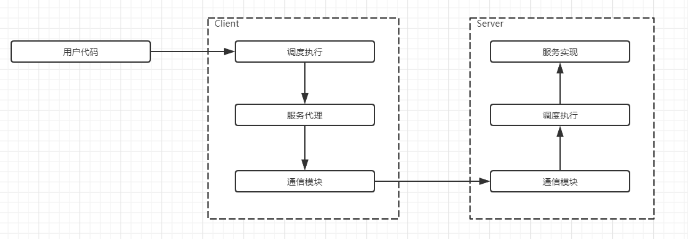
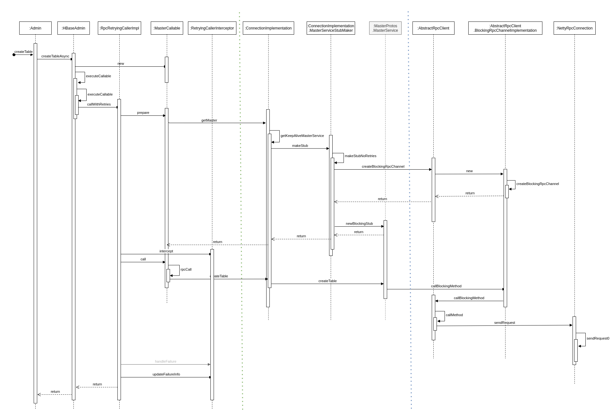
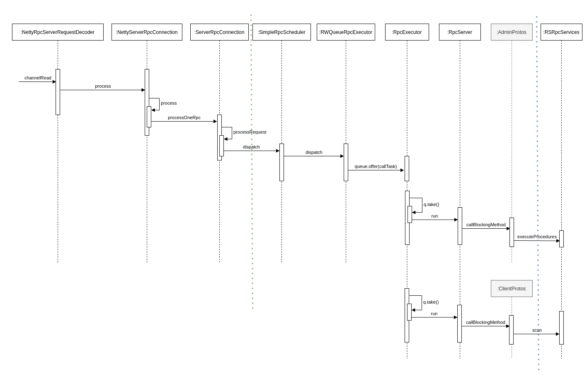
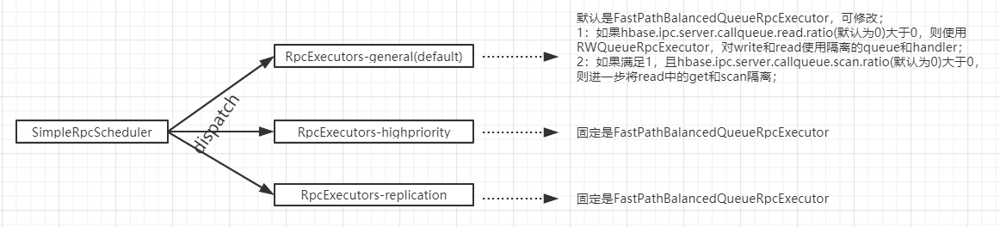
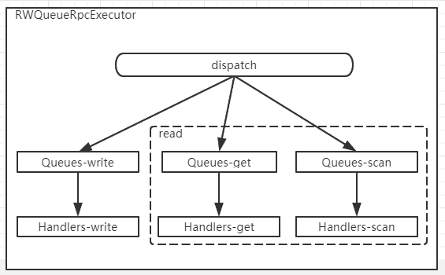
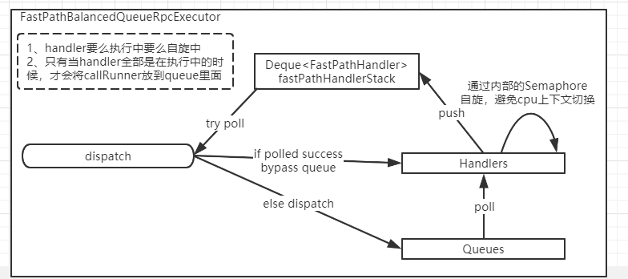

Ch13-HBase 之 RPC
March 31, 2021
HBase RPC
1. 引入 RPC #
1.1 RPC 的基本概念 #
RPC（Remote Procedure Call）远程过程调用，它是一种技术思想，而非规范或者协议。从效果上来看，A 节点应用可以像调用本地方法一样调用 B 节点服务的方法。为了达到这样的目的，需要解决通讯问题，序列化和反序列化问题，寻址问题等等。

上图中的 Stub 类似于一个代理，一般的使用方法是response = stub.scan(controller, request)，比如在 A 节点的应用中使用stub.scan(...)实际上调用的就是 B 节点上指定服务的方法。
RPC 的实现需要解决序列化和反序列化问题，在日常的开发中，这一块借由 protobuf 定义的 message 实现；寻址问题则借 protobuf 定义的 service 实现；通讯问题借助 Netty 实现。
2. RPC 涉及到的模块说明 #
HBase 整个 RPC 框架实现逻辑较为繁琐，不过依旧没有偏离上述的实现逻辑。
2.1 RPC 操作的 RPC 消息结构 #
3. HBase RPC 操作的流程介绍 #

4. HBase Client 的流程 #

上图的流程被绿色和蓝色的线分割成了三部分，最左边的一部分完成了调度执行的功能，中间的部分完成了服务代理的功能，最右边的部分完成了通信模块的功能。
4.2 调度执行 #
该模块主要提供接口转换、错误重试、服务分组等能力；
| 名称 | 说明 |
|---|---|
| 接口转换 | 服务层定义的服务接口与用户层不同，比如 put/delete/increment/append 等操作底层都是调用的 mutate 接口，而 batch 相关的操作，无论是读还是写都调用 multi 接口；转换逻辑封装为一个 Callable 对象，交由 RpcRetryingCaller 处理 |
| 错误重试 | RpcRetryingCaller 负责与服务代理模块直接交互，以及错误时的重试 |
| 服务分组 | batch 相关的操作可能会涉及到多个 RegionServer，需要按照 RegionServer 进行分组，然后多线程并发请求，这些逻辑是在 AsyncProcess 中；对于非 batch 类请求则直接使用 RpcRetryingCaller 进行调用，AsyncProcess 的内部实际上也是依赖了该类来执行单个 RegionServer 请求 |
4.3 服务代理 #
服务代理实现了与服务端同样的接口； 对调度执行模块而言，调用 stub 的方法就相当于调用远程的服务，而不必关心实现细节；
这部分依赖 protobuf 组件，通过在 proto 文件中定义 service 及 message 类型的参数，可直接生成接口和 stub 实现类；
在 ConnectionImplementation 类中有一个 Map 类型的 stubs 变量，其 key 为 service name + regionserver，value 则是 stub 实例；
4.4 通信模块 #
该模块主要进行序列化和 io 处理；
目前 HBase 已采用 netty 作为底层的 io 框架，客户端的核心类为 NettyRpcClient；
服务代理层的 stub 类中含有一个 BlockingRpcChannel 类型的变量，而 rpcClient 通过实现该接口并将实例注入来与之对接；
序列化则是依赖 protobuf 组件，序列化与反序列化的逻辑都放在 NettyRpcDuplexHandler 中，该类注册在 netty 的 pipeline，会基于不同的事件自动调用；
5. HBase RegionServer 的流程 #

BlockingQueue<CallRunner> q = new LinkedBlockingQueue<>()
上图的流程被绿色和蓝色的线分割成了三部分，最左边的一部分完成了通信模块的功能，中间的部分完成了调度执行的功能，最右边的部分完成了无复实现的功能。
5.1 通信模块 #
该模块主要负责数据的读取、反序列化并封装为 call 对象；
核心实现类为 NettyRpcServer，通过在 pipeline 中注册的一些 handler 来完成上述处理；
5.2 调度执行 #
通信模块得到的 call 对象会交由 rpcScheduler 进行调度，目前默认实现为 SimpleRpcScheduler；
rpcScheduler 的主要作用是根据请求类型把请求分配给不同的 rpcExecutor 实例，请求类型有 3 种：普通请求、高优先级请求和 replication 请求，而 rpcExecutor 的实现目前主要由 RWQueueRpcExecutor 和 FastPathBalancedQueueRpcExecutor 两种，不同的类型使用了不同实现，关系如下：

RWQueueRpcExecutor 的特点是内部可以对读写隔离，以及对 get 和 scan 隔离，所谓隔离的意思是，call 对象会放入独立的 callQueue，并使用独立的 handler 进行处理；
5.3 服务实现 #
服务端实现类需要实现一些接口，例如 AdminService.BlockingInterface、ClientService.BlockingInterface、MasterService.BlockingInterface 等；
HMaster 的服务实现类主要是 MasterRpcServices，HRegionServer 的服务实现类主要是 RSRpcServices；
service 相关的类会在启动阶段进行初始化，然后在请求处理时根据 connection 的 serviceName 获取到对应的 service 实例，再根据 call 对象的 method 和 param 进行方法的调用；
6. HBase Master 的流程 #
Master 做为一种特殊的 RegionServer，整个流程与 RegionServer 类似，唯独不同的是服务实现类不同，Master 的实现类是 MasterRpcServices。
7. 参考文献 #
8. 附件 #
8.1 RWQueueRpcExecutor #

RWQueueRpcExecutor 的特点是内部可以对读写隔离，以及对 get 和 scan 隔离，所谓隔离的意思是，call 对象会放入独立的 callQueue，并使用独立的 handler 进行处理；
8.2 FastPathBalancedQueueRpcExecutor #

FastPathBalancedQueueRpcExecutor 不支持隔离，其特点是对于空闲的 handler，让其自旋而不是阻塞，以减少线程上下文切换的消耗；